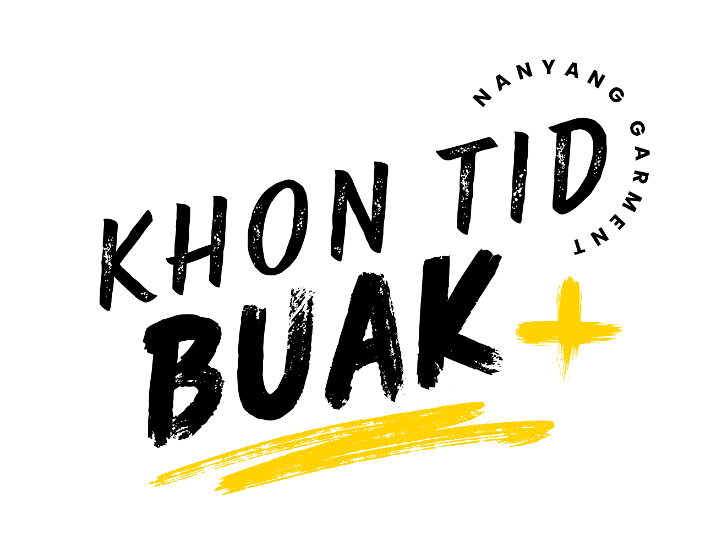
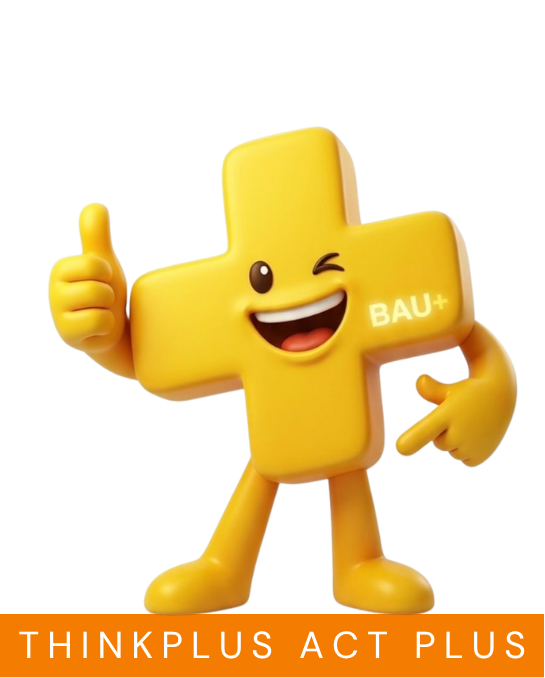

🇹🇭
ไทย
🇬🇧
EN
🇲🇲
MY
🇱🇦
ລາວ


คุณคือ "คนติดบวก"
แบบไหน?
ตอบคำถาม 5 ข้อ เพื่อค้นหาว่าคุณ
มี DNA ใกล้เคียงกับ Character ไหนมากที่สุด
แล้วต่อด้วยมินิเกมเฉพาะตัว!
🏆
📊
🚫
♻️
🔧
🚀
เริ่มทำ Quiz
ใช้เวลาเพียง 1 นาที · Khon Tid Buak Roadshow
คำถามที่ 1 จาก 5
คุณคือ คนติดบวก แบบ
🎮 เล่นภารกิจของฉันต่อ
🔄 ทำ Quiz อีกครั้ง
รอบที่ 2: ภารกิจคนติดบวก
เลือก Character เพื่อเล่นมินิเกมเฉพาะตัว
ใช้เวลาแค่ 1-2 นาที
🏆
Exceed Standard
เกมเติมเกจ
📊
Let Data Lead
จับตัวเลขผิด
🚫
Don't Send Defects
ดักของเสีย
♻️
Rework is Waste
คัดงานดี-เสีย
🔧
See it Broken, Fix it
ตีจุดเสีย
🚀
Find a New Way
หาทางลัด
↻ เริ่มต้นใหม่ทั้งหมด
←
🏆 Exceed Standard
เติมเกจให้หยุดในโซนสีเขียว
3 ครั้ง
กดปุ่มค้างไว้เพื่อเติมเกจ ปล่อยให้หยุดตรงโซนเขียว (เกินมาตรฐานพอดี ไม่มากไม่น้อยเกินไป)
กดค้างไว้
โอกาสที่เหลือ: 3
←
📊 Let Data Lead
หาตัวเลขที่ผิดปกติจากข้อมูล
รอบ 1/3
แตะตัวเลขที่ "สูงผิดปกติ" เมื่อเทียบกับเพื่อนๆ ในกลุ่ม (Defect Rate %)
←
🚫 Don't Send Defects
แตะของเสียก่อนหลุดผ่านเส้นแดง!
0 / 8
เส้นอันตราย
←
♻️ Rework is Waste
คัดแยกงานที่ดีกับที่ต้องแก้
1/5
ดูสถานการณ์ แล้วตัดสินใจว่า "ผ่านได้เลย" หรือ "ต้องแก้ไขใหม่"
👕
กำลังโหลด...
✅ ผ่านได้เลย
🔁 ต้องแก้ไข
คะแนน: 0/5
←
🔧 See it Broken, Fix it
แตะจุดที่เสียให้เร็วที่สุด!
0 แต้ม
←
🚀 Find a New Way
หาทางลัดที่เร็วที่สุดไปเป้าหมาย
ก้าวที่ 1/4
แตะช่องถัดไปที่ "ใกล้ 🎯 มากที่สุด" เพื่อหาทางลัดที่เร็วที่สุด
คะแนนที่ได้
🎁 รับของที่ระลึก
🔄 เล่น Character อื่น